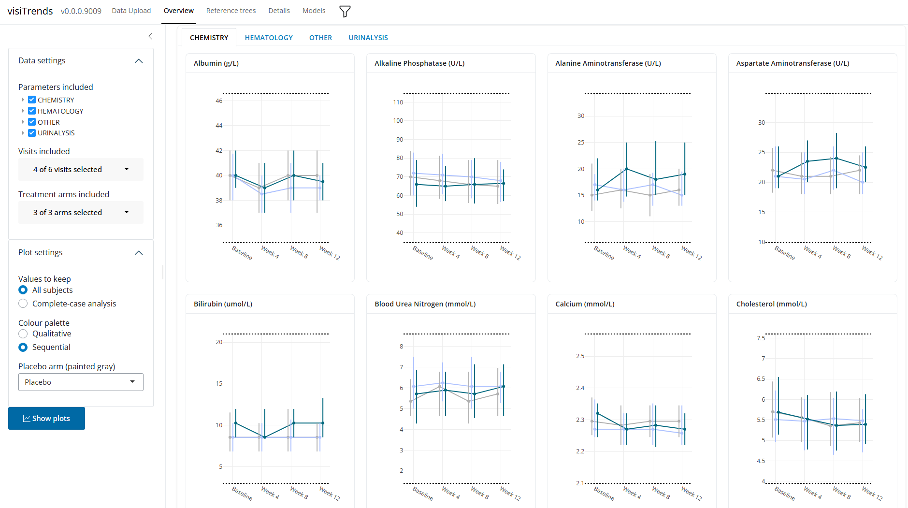

visiTrends supports the exploratory review of laboratory and vital-sign signals measured over multiple visits. Designed primarily for these repeated safety measures, it also applies to efficacy endpoints and questionnaire scores collected by subject, visit, and treatment. Four linked displays structure the review. An overview shows visit-wise medians and interquartile ranges for each parameter by treatment arm, grouped by parameter category and displayed against the limits of normal, giving a broad picture of change over time across many parameters. A detailed view focuses on up to three parameters, combining individual trajectories with distributional summaries such as violin plots. A threshold analysis classifies each participant's results as below, within, or above the reference range at successive visits, showing when abnormalities occur, whether they persist, resolve, or recur, and how these patterns differ between treatment arms. Finally, a mixed model for repeated measures estimates change from baseline for a selected parameter, either within or between treatment arms, with 95% confidence intervals. Together, these views complement standard safety displays by supporting a broader review of longitudinal trends and potential signals.